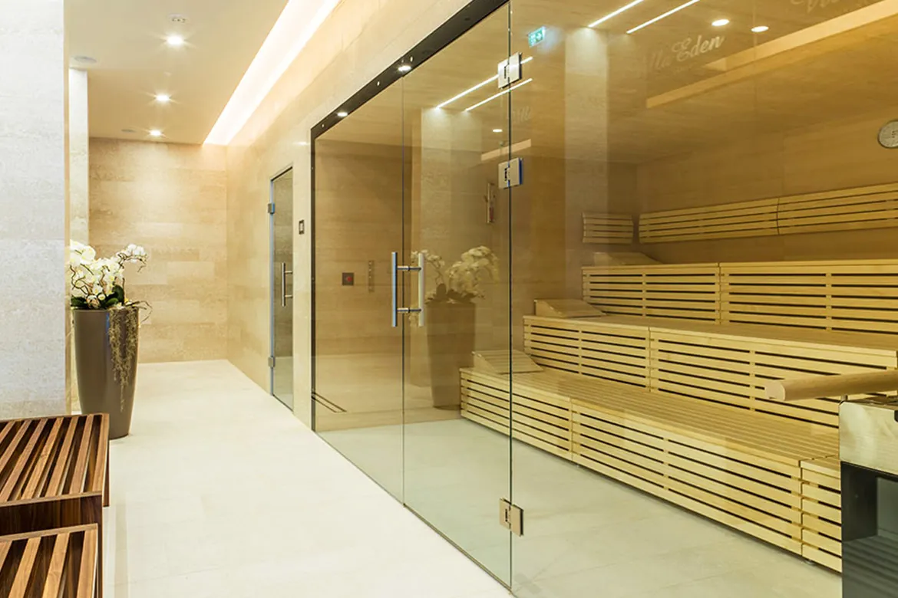
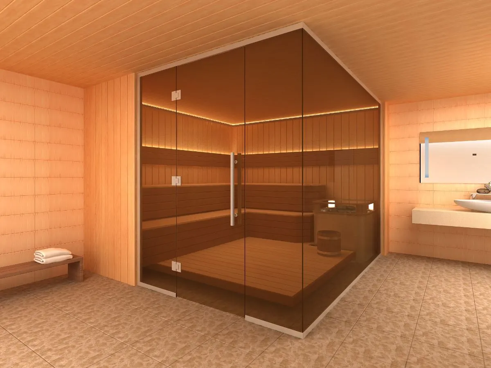

Перегородки из стекла для саун и турецких бань (хамам)


Обустройство перегородки саун и турецких бань является важным этапом отделки и осуществляется еще на начальном этапе строительства. Ведь единая общая комната в любом построении – это не только неудобно, но и не практично.
Минимально должно быть представлено два помещения, которые являют собой саму парную и зону для переодевания. При этом перегородки должны в полной мере соответствовать общей дизайнерской концепции.
Стеклянные перегородки, как наиболее эстетичный вариант
Перегородки и двери из стекла ДизанСтекло выглядят модно и относятся к наиболее востребованному материалу. Основными преимуществами стеклянных перегородок выступают:
- Повышенная прочность;
- Износоустойчивость и огнеупорность;
- Высокие звукоизолирующие качества;
- Термостойкость стеклянных перегородок;
- Способность выдерживать широкий разброс температур – от -30 до +50 градусов.
Стеклянные перегородки для сауны в самаре под заказ
Компания «ДизайнСтекло» предлагает широкий выбор конструкций и дизайна стеклянных перегородок. Преимущественно – это круглые, треугольные, трапециевидные и нестандартные формы. Тип профильной систему позволяет монтировать перегородку как к потолку, так и к полу. При этом представлен широкий выбор цвета стекол – от полностью прозрачного до бронзирующего, матового оттенка. Все в комплексе делает стеклянные перегородки лучшим выбором для обустройства турецких бань и саун.